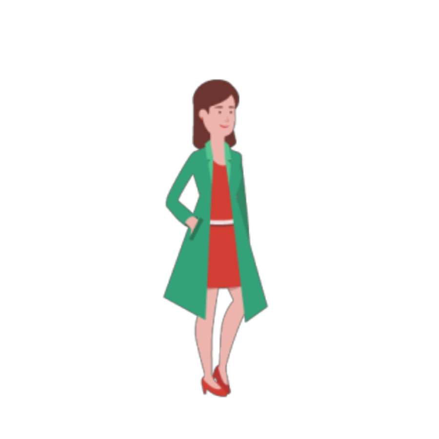
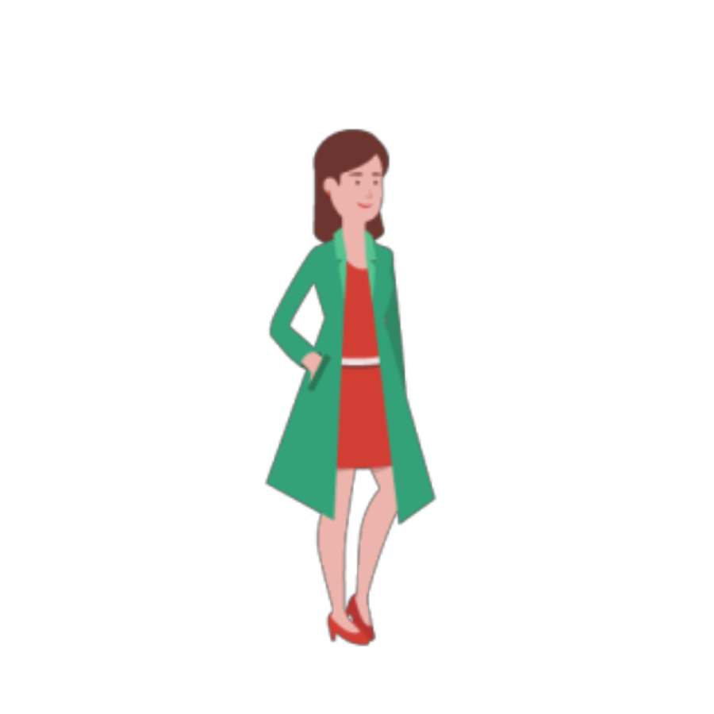
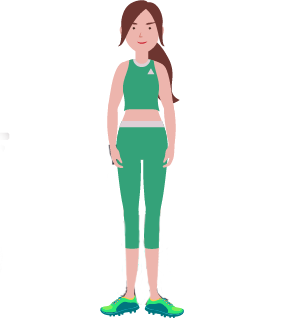

Rigid foam boards for thermal insulation
Polyurethane boards are used both indoors and outdoors for the thermal insulation of roofs, walls and floors.
Reducing your energy consumption with coating for roof tiles
Efficient insulation is critical to the reduction of energy consumption. Covestro offers several insulation technologies for perimeter wall and roofing insulation. Additionally, the company's polyurethane spray foam insulation saves up to 99.5 percent of the energy used to produce the material over a 50-year life span.

Using the power of the sun.
Photovoltaic modules are used to obtain solar energy. Different ways of embedding the solar cells allow transparent or curved design of the photovoltaic modules. A Special polyurethane frame system is used to integrate the photovoltaic elements into the roof.
Keeping cold to prevent food wastage
Rigid polyurethane insulating foam makes a major contribution to sustainability and eco-design by reducing the energy required to keep refrigerators and freezers cold. Polyurethane rigid foam is the insulating material which is most widely used throughout the world for refrigerators and freezers. The insulation efficiency of polyurethane foam is a key property for the low temperature preservation of food during processing, storage and distribution for the consumer. Without polyurethane insulated refrigeration, approximately 50% of the world's food would rot, heavenly influencing our daily life and food related business.
LED lighting for outdoor and indoor areas
LED lighting systems can produce considerable savings in electricity consumption. To make optimum use of the light, lenses are incorporated to guide it in a particular direction. Polycarbonates are also used in the lamp housing to give complete system a long service life in all types of condition.
Innovation in design
Since 1925, the TV has transformed from a small black and white box receiving analog signals to today's fully digital, big and ultra-thin screen. Polycarbonates from Covestro enable new, innovative designs, which will completely change the user experience.
Decorative floor coating - A beautiful combination of art and technology.
The attractiveness of floors can be significantly increased by a decorative design. The use of innovative high-tech floor coatings made of polyurethane raw materials produced by Covertro can add an individual touch of art to large-surface floors.
Corrosion protection for tank
Instructural engineering special poryurethane coating systems provide industial facilities, bridges, cranes or wind energy plants with durable and effective protection against corrosion, aggressive chemicals, salts and solvents. In addition, these coatings exhibit a very good adhesion to steel surfaces. On top of that they are easy and fast to apply. These coating systems also show a very good weather and chalking resistance. They keep their color and gloss for a long time.
Transparent roof tiles
The high performance of Makrolon multi Polycarbonate sheets make them suitable for a wide variety of roofing applications: from creative stadiums and rail station roof utilizing complex dome contructions, or continuous skylights to lightweight conservatory roof. Makrolon multi sheets offers functionality. economy and aesthetic pleasing appearance.
Solar Impulse Around the world with the mere power of the sun
Modern and clean technologies can make the impossible possible. Pioneers Bertrand Piccard and Andre Borschberg proved that and become the first people to circumnavigate the globe in an aircraft powered solely be the energy of the sun: the Solar Impulse 2.
The aircraft has the wingspan of a large airliner, yet only weighs as much as a compactcar. Solar cells on wings spanning 72 meters power the propellers and charge a battery, which then provides power during the night. This allows the Si2 to fly without interruption and without comsuming a single drop of fuel.
Advanced plastics and material solutions from Covestro make the journey possible. Because they do not only make the aircraft simultaneously extremely lightweight and strong, they also protect the pilots from extreme outside temperatures.
The aircraft has the wingspan of a large airliner, yet only weighs as much as a compactcar. Solar cells on wings spanning 72 meters power the propellers and charge a battery, which then provides power during the night. This allows the Si2 to fly without interruption and without comsuming a single drop of fuel.
Advanced plastics and material solutions from Covestro make the journey possible. Because they do not only make the aircraft simultaneously extremely lightweight and strong, they also protect the pilots from extreme outside temperatures.
Ultra-thin notebook More than just an "Ultrabook"
Always on the move? Light enough to be taken anywhere, razor-thin and stylish, powerful and long lasting: this is waht defines a new generation of laptops - the "Ultrabook".
While traditional notebooks can weight up to 2.6 kg and have a 3.5 cm profile thickness, the new ultra-thin laptop generation offers weighs as low as 1.5 kg and only a 2.1 cm profile thickness. Covestro's specially formulated reinforced polycarbonates can trim weight further to save up to 100 g, which is 1.4 kg in total weight. And they reduce profile thickness by 45%, meaning 1.4 cm or even less.
While traditional notebooks can weight up to 2.6 kg and have a 3.5 cm profile thickness, the new ultra-thin laptop generation offers weighs as low as 1.5 kg and only a 2.1 cm profile thickness. Covestro's specially formulated reinforced polycarbonates can trim weight further to save up to 100 g, which is 1.4 kg in total weight. And they reduce profile thickness by 45%, meaning 1.4 cm or even less.
Getting styled with Baycusan
Baycusan polyurethane dispersions are a film formers for many hair styling products, for example: hairsprays, hair mousses, hair styling creams, styling lotions, etc. Its unique structure gives it balance of elasticity, hydrophobicity and washability. The extraordinary elasticity of Baycusan imparts a natural lasting hold.

Style and security on your travels
Whether travelling by plane, train or car, luggage gets tossed, dropped and worse. When arriving at their final destination, travelers want their suitcases to be intact and their belongings protected. The durable Makrolon polycarbonate brings style and security the Porche Design Roadster hard-shell suitcase without addes weight.

Polyurethane Dispersions and Polyurea Powder for skin and sun care
For skin and sun care formulations, Covestro offers two novel solutions: film forming polyurethane dispersions and a non film-forming polyurea powder as a sensory additive. Although the film-forming polymer itself does not contain any UV-absorbing components, it can boots the sun protection factor (SPF) of formulation. In addition to having a pleasant skin feel, it also stabilizes emulsions - important particularly for sprays - and lends sun care products very good water resistance.

Ensuring your integrity
The integrity of information on ID cards, passports and driving licenses made of paper, plastic, or metal can be significantly improved when fabricated as multilayer structures, laminated with polycarbonate films. PC film may be used to encapsulate the sensitive electronic components that contain the identity verification used in ID card systems.
 

Bringing Magic to material
Polyurethane (PU) coatings play an essential role in transforming many of the fabrics that surround our lives. Applied in thin layers, they bring functionality to the material used in outdoorwear and provide a pleasing touch to denim jeans while protecting color effects. In thicker layers, PU coatings are the key to high quality synthetic materials that are used windshieldy in footwear uppers, garments and accessories, furniture and car upholstery. Multi-talented PU brings remarkable appeal and comfort through its incredible combination of softness and durability.
Need more air?
Imagine not being able to climb the stairs without stopping to take a break, or getting winded trying to stand and do the dishes. Unfortunately these are common realities for individuals suffering from respiratory conditions. Ventilators can help reduce the work of breathing by unloading the ancillary respiratory muscles, but they are often bulky and heavy, creating additional limitations for users. The Breathe Non-Invasive Open Ventilation System technology made with Makrolon polycarbonate is a better solution. By reducing the overall size of the ventilation system, it supports patient mobility and independence.
Helping you to stay independant the insulin pen made of Bayblend
This small device with the size and appearance of a ball-point pen makes life easier for people who suffer from diabetes, a widespread disease in modern society. They can administer the desired does of the medicine to themselves in a simple and user-friendly manner. The plastic is particularly well suited for injection molding of thin-walled components such as those used here.

The dream of every child: an illuminated bicycle
Phantom Frames developed and patented the first transparent bike frame to transmit light. The frame combines the strength of Makrolon polycarbonate with high-intensity LED lights available in five colors and customizable flashing features.

Polycarbonate - a plastic that ensures safety
Breakproof and virtually splinter-free: helmets, sports googles and visors of Covestro polycarbonate Makrolon.

Breakproof headlamp lenses with Makrolon
Imagine driving along a hilly road at night. Suddenly some chucks of stone come loose from the steep rocky wall, and although you do an emergency stop, a piece of rock hits one of the headlamps at full force. Somewhat shaken, you get out and, to your surprise, find that both headlamp lenses are still intact. But then, that's not surprising: they're made of breakproof Makrolon.

Protecting your car
Polyurethane coatings are applied to products to improve their appearance and lifespan. On cars, polyurethane coatings give the exterior a high gloss and improved color retention, while offering improved scratch and corrosion-resistance.

cradyon : brighter use of CO2
cradyon is an innovative raw material for the production of high quality, flexible polyurethane foams. It is made with carbon dioxide (up to 20%) - a raw material which is both abundant and available as a chemicals feedstock. cradyon represents a breackthrough innovation which enables manufacturers to look at alternative and more sustainable raw materials while reducing their reliance on fossil fuels.

Environmetal friendly adhesives for sport shoes
For the "Green Shoe Concept" we developed a shoe based on environmental friendly raw materials like Dispercoll that can be formulated without the use of any organic solvents. Some of these raw materials originate from renewable resources already.

Durable seating with polyurethane foam
In a study comparing polyurethane-based seats to other materials, polyurethane cushioning with well over 5,000 hours of fleet use still met the original design intent, with negligible loss of hardness or comfort. Cushions made with other materials (polyester and natural rubberized fibers) had to be removed from the test vehicles due to compacting deformation and degradation. Arm rests, head rests, cushioned instrument panels and other parts of your car's interior are all made with polyurethane foams. Thanks to the efficient and cost-effective processes, these foams can be recycled make carpeting for homes, offices and cars.
Protection against graffitis with great durability
Covestro has developed waterbased polyurethane coating systems, that prevent the color pigments and dyestuffs to enter the coatings layer underneath the top-coat, while at the same time being durable enough to withstand the repeated removal procedure without damage for a long time.
Playing like the champions
"Beau Jeu" means beautiful game in French and was the official match ball of the European Football Championship 2016 in France. Together with Adidas, Covestro has been developing balls for 30 years.